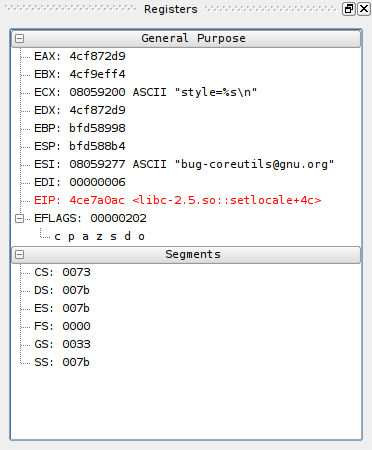

The register view shows the current register state of the program. It is currently broken up into two sections.
The general purpose section shows the standard register set for the given architecture. Currently only x86 is supported (so this means eax, ebx, ecx, edx, esi, edi, esp, ebp). In the future, other architectures will be supported, the view will show the appropriate registers. The intruction pointer and flags register have been placed in the group as well due to there frequency of use. Note that eflags can be expanded showing all flags which are used in conditional operations, lowercase indicates unset, uppercase indicates set.
When displaying a general purpose register, the view will determine if that value is a pointer to a string, if it appears to be, it will be shown inline with the register's value.
When displaying the intruction pointer, the view will try to determine which module, and if symbols are available for that module, where in that module the instruction pointer currently is
The second section shows the current segements, once again this is an architecture specific notion, so expect them to be different once other architectures are supported. Also, you MAY change the segment values, however since this is normally set by the Operating System, the results are likely not going to be very useful.